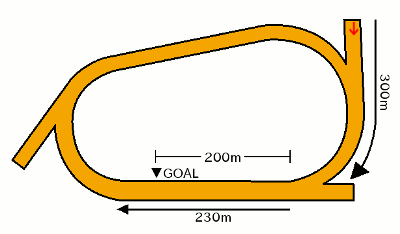

無料メルマガで連日の無料予想と秋G1の極秘情報もGETしよう!!
無料メルマガ登録フォーム
最終更新日：
YouTubeで登録者数6万人のうまめし競馬チャンネルを運営しているうまめし君です！
高知競馬の1600mコースの特徴や傾向を分析して、馬券の攻略法を探ってみたいと思います。
もくじ
競馬場特徴の一覧に戻る
札幌 函館 福島 新潟 東京 中山 中京 京都 阪神 小倉 地方 海外
無料メルマガで連日の無料予想と秋G1の極秘情報もGETしよう!!
無料メルマガ登録フォーム
高知ダ1600mコースでの枠順と脚質別の成績を見ていきましょう。
1枠の成績は（1着88回・2着73回・3着78回・着外441回）で、勝率は12パーセント・連対率は23パーセント・複勝率は35パーセントとなっています。好枠 逃げ警戒 道悪実績
脚質別の馬券に絡むパーセンテージは逃げ：54％・先行：42％・差し：26％・追込：5％となっております。
2枠の成績は（1着86回・2着79回・3着74回・着外441回）で、勝率は12パーセント・連対率は24パーセント・複勝率は35パーセントとなっています。好枠 逃げ警戒 道悪実績
脚質別の馬券に絡むパーセンテージは逃げ：58％・先行：41％・差し：24％・追込：7％となっております。
3枠の成績は（1着73回・2着78回・3着70回・着外459回）で、勝率は10パーセント・連対率は22パーセント・複勝率は32パーセントとなっています。 逃げ警戒
脚質別の馬券に絡むパーセンテージは逃げ：64％・先行：38％・差し：19％・追込：3％となっております。
4枠の成績は（1着73回・2着69回・3着74回・着外464回）で、勝率は10パーセント・連対率は20パーセント・複勝率は31パーセントとなっています。 逃げ警戒 道悪実績
脚質別の馬券に絡むパーセンテージは逃げ：59％・先行：37％・差し：21％・追込：9％となっております。
5枠の成績は（1着75回・2着80回・3着83回・着外442回）で、勝率は11パーセント・連対率は22パーセント・複勝率は35パーセントとなっています。好枠 逃げ警戒
脚質別の馬券に絡むパーセンテージは逃げ：71％・先行：43％・差し：24％・追込：10％となっております。
6枠の成績は（1着67回・2着79回・3着85回・着外622回）で、勝率は7パーセント・連対率は17パーセント・複勝率は27パーセントとなっています。 逃げ警戒
脚質別の馬券に絡むパーセンテージは逃げ：55％・先行：34％・差し：20％・追込：4％となっております。
7枠の成績は（1着93回・2着93回・3着104回・着外694回）で、勝率は9パーセント・連対率は18パーセント・複勝率は29パーセントとなっています。 逃げ警戒
脚質別の馬券に絡むパーセンテージは逃げ：62％・先行：36％・差し：20％・追込：11％となっております。
8枠の成績は（1着123回・2着123回・3着108回・着外750回）で、勝率は11パーセント・連対率は22パーセント・複勝率は32パーセントとなっています。好枠 逃げ警戒 道悪実績
脚質別の馬券に絡むパーセンテージは逃げ：58％・先行：40％・差し：18％・追込：15％となっております。
下の表は枠を考慮しない脚質成績
| 逃げ | 先行 | 差し | 追込 | |
|---|---|---|---|---|
| 勝 率 | 28% | 12% | 5% | 1% |
| 連対率 | 47% | 26% | 12% | 4% |
| 複勝率 | 60% | 39% | 21% | 9% |
無料メルマガで連日の無料予想と秋G1の極秘情報もGETしよう!!
無料メルマガ登録フォーム
高知競馬のコーストラックはコンパクトなので、笠松や名古屋と同様に3コーナー付近にあるポケットと呼ばれる引込線があり、そこからスタートします。

スタートから最初の4コーナーまで150m程度しかなく内枠からダッシュ良く思い切り先行されてしまえば、外枠の馬は早々にそこそこのポジションで諦めるしかありません。
コースの形状から内枠の方が先行争いは有利なのですが、枠順そのものよりもスタートの上手さとダッシュの加速の速さが重要です。
基本的に1300mや1400mでは逃げ馬が勝ちやすい傾向ですが、1600mになると少し距離が伸びる分逃げ馬が粘りきれないシーンが増えます。
無料メルマガで連日の無料予想と秋G1の極秘情報もGETしよう!!
無料メルマガ登録フォーム
高知ダ1600mコースでの人気別の成績を見ていきましょう。
1番人気の成績は（1着298回・2着150回・3着70回・着外158回）で、勝率は44パーセント・連対率は66パーセント・複勝率76パーセントとなっています。
脚質別の馬券に絡むパーセンテージは逃げ：93％・先行：75％・差し：65％・追込：50％となっております。
2番人気の成績は（1着159回・2着161回・3着108回・着外248回）で、勝率は23パーセント・連対率は47パーセント・複勝率63パーセントとなっています。
脚質別の馬券に絡むパーセンテージは逃げ：77％・先行：63％・差し：55％・追込：30％となっております。
3番人気の成績は（1着84回・2着109回・3着135回・着外348回）で、勝率は12パーセント・連対率は28パーセント・複勝率48パーセントとなっています。
脚質別の馬券に絡むパーセンテージは逃げ：60％・先行：49％・差し：43％・追込：22％となっております。
4番人気の成績は（1着46回・2着99回・3着106回・着外425回）で、勝率は6パーセント・連対率は21パーセント・複勝率37パーセントとなっています。
脚質別の馬券に絡むパーセンテージは逃げ：54％・先行：40％・差し：30％・追込：5％となっております。
5番人気の成績は（1着32回・2着59回・3着86回・着外500回）で、勝率は4パーセント・連対率は13パーセント・複勝率26パーセントとなっています。
脚質別の馬券に絡むパーセンテージは逃げ：43％・先行：25％・差し：23％・追込：14％となっております。
6番人気の成績は（1着31回・2着34回・3着68回・着外540回）で、勝率は4パーセント・連対率は9パーセント・複勝率19パーセントとなっています。
脚質別の馬券に絡むパーセンテージは逃げ：46％・先行：21％・差し：15％・追込：4％となっております。
7番人気の成績は（1着14回・2着27回・3着55回・着外559回）で、勝率は2パーセント・連対率は6パーセント・複勝率14パーセントとなっています。
脚質別の馬券に絡むパーセンテージは逃げ：33％・先行：12％・差し：12％・追込：13％となっております。
8番人気の成績は（1着8回・2着19回・3着28回・着外549回）で、勝率は1パーセント・連対率は4パーセント・複勝率9パーセントとなっています。
脚質別の馬券に絡むパーセンテージは逃げ：18％・先行：14％・差し：5％・追込：6％となっております。
無料メルマガで連日の無料予想と秋G1の極秘情報もGETしよう!!
無料メルマガ登録フォーム
高知ダ1600コースでの騎手成績を詳細に見ていきましょう。
永森大騎手の成績は79-51-56-195で、1~4番人気での成績は75-46-46-93で、5番人気以下の人気薄での騎乗成績は4-5-10-102でした。
赤岡修騎手の成績は72-39-23-125で、1~4番人気での成績は71-35-21-83で、5番人気以下の人気薄での騎乗成績は1-4-2-42でした。
宮川実騎手の成績は62-47-29-118で、1~4番人気での成績は62-43-27-80で、5番人気以下の人気薄での騎乗成績は0-4-2-38でした。
多田誠騎手の成績は54-54-51-217で、1~4番人気での成績は44-49-39-80で、5番人気以下の人気薄での騎乗成績は10-5-12-137でした。
井上瑛騎手の成績は49-45-51-180で、1~4番人気での成績は41-36-35-63で、5番人気以下の人気薄での騎乗成績は8-9-16-117でした。
吉原寛騎手の成績は43-46-12-64で、1~4番人気での成績は43-45-12-47で、5番人気以下の人気薄での騎乗成績は0-1-0-17でした。
山崎雅騎手の成績は38-43-38-235で、1~4番人気での成績は28-33-19-71で、5番人気以下の人気薄での騎乗成績は10-10-19-164でした。
岡村卓騎手の成績は36-45-55-240で、1~4番人気での成績は31-34-36-75で、5番人気以下の人気薄での騎乗成績は5-11-19-165でした。
畑中信騎手の成績は35-31-31-207で、1~4番人気での成績は31-26-18-66で、5番人気以下の人気薄での騎乗成績は4-5-13-141でした。
倉兼育騎手の成績は35-27-19-101で、1~4番人気での成績は33-23-16-44で、5番人気以下の人気薄での騎乗成績は2-4-3-57でした。
郷間勇騎手の成績は29-30-31-218で、1~4番人気での成績は21-24-19-62で、5番人気以下の人気薄での騎乗成績は8-6-12-156でした。
佐原秀騎手の成績は26-26-28-180で、1~4番人気での成績は23-18-15-52で、5番人気以下の人気薄での騎乗成績は3-8-13-128でした。
岡遼太騎手の成績は25-37-31-230で、1~4番人気での成績は15-26-19-72で、5番人気以下の人気薄での騎乗成績は10-11-12-158でした。
林謙佑騎手の成績は23-28-34-192で、1~4番人気での成績は15-19-17-53で、5番人気以下の人気薄での騎乗成績は8-9-17-139でした。
妹尾浩騎手の成績は15-15-25-167で、1~4番人気での成績は13-8-13-43で、5番人気以下の人気薄での騎乗成績は2-7-12-124でした。
上田将騎手の成績は12-15-20-140で、1~4番人気での成績は10-12-12-29で、5番人気以下の人気薄での騎乗成績は2-3-8-111でした。
城野慈騎手の成績は10-7-14-175で、1~4番人気での成績は9-2-6-30で、5番人気以下の人気薄での騎乗成績は1-5-8-145でした。
塚本雄騎手の成績は9-15-13-81で、1~4番人気での成績は7-9-9-19で、5番人気以下の人気薄での騎乗成績は2-6-4-62でした。
嬉勝則騎手の成績は8-10-9-96で、1~4番人気での成績は7-6-5-18で、5番人気以下の人気薄での騎乗成績は1-4-4-78でした。
木村直騎手の成績は7-9-20-187で、1~4番人気での成績は4-5-8-14で、5番人気以下の人気薄での騎乗成績は3-4-12-173でした。
西森将騎手の成績は4-13-15-140で、1~4番人気での成績は3-6-5-12で、5番人気以下の人気薄での騎乗成績は1-7-10-128でした。
濱尚美騎手の成績は3-2-6-67で、1~4番人気での成績は2-1-3-10で、5番人気以下の人気薄での騎乗成績は1-1-3-57でした。
中島龍騎手の成績は3-11-15-58で、1~4番人気での成績は3-7-5-19で、5番人気以下の人気薄での騎乗成績は0-4-10-39でした。
大澤誠騎手の成績は2-4-13-171で、1~4番人気での成績は0-1-4-5で、5番人気以下の人気薄での騎乗成績は2-3-9-166でした。
村上弘騎手の成績は2-4-2-12で、1~4番人気での成績は2-2-1-7で、5番人気以下の人気薄での騎乗成績は0-2-1-5でした。
松井伸騎手の成績は2-2-3-27で、1~4番人気での成績は1-2-1-6で、5番人気以下の人気薄での騎乗成績は1-0-2-21でした。
山田貴騎手の成績は2-0-2-15で、1~4番人気での成績は2-0-1-1で、5番人気以下の人気薄での騎乗成績は0-0-1-14でした。
阿部基騎手の成績は2-12-8-199で、1~4番人気での成績は1-6-3-17で、5番人気以下の人気薄での騎乗成績は1-6-5-182でした。
野畑凌騎手の成績は1-0-1-1で、1~4番人気での成績は1-0-1-0で、5番人気以下の人気薄での騎乗成績は0-0-0-1でした。
仲原大騎手の成績は1-0-4-13で、1~4番人気での成績は0-0-2-3で、5番人気以下の人気薄での騎乗成績は1-0-2-10でした。
石本純騎手の成績は1-4-11-104で、1~4番人気での成績は1-1-1-6で、5番人気以下の人気薄での騎乗成績は0-3-10-98でした。
石川倭騎手の成績は1-0-0-0で、1~4番人気での成績は1-0-0-0で、5番人気以下の人気薄での騎乗成績は0-0-0-0でした。
小牧太騎手の成績は1-1-0-0で、1~4番人気での成績は1-1-0-0で、5番人気以下の人気薄での騎乗成績は0-0-0-0でした。
高野誠騎手の成績は1-1-0-22で、1~4番人気での成績は1-0-0-1で、5番人気以下の人気薄での騎乗成績は0-1-0-21でした。
岩本怜騎手の成績は1-0-0-11で、1~4番人気での成績は1-0-0-1で、5番人気以下の人気薄での騎乗成績は0-0-0-10でした。
加藤翔騎手の成績は1-4-2-47で、1~4番人気での成績は0-0-2-10で、5番人気以下の人気薄での騎乗成績は1-4-0-37でした。
澤田龍騎手の成績は0-0-0-1で、1~4番人気での成績は0-0-0-1で、5番人気以下の人気薄での騎乗成績は0-0-0-0でした。
飛田愛騎手の成績は0-0-0-1で、1~4番人気での成績は0-0-0-0で、5番人気以下の人気薄での騎乗成績は0-0-0-1でした。
渡邊竜騎手の成績は0-0-0-3で、1~4番人気での成績は0-0-0-1で、5番人気以下の人気薄での騎乗成績は0-0-0-2でした。
塚本征騎手の成績は0-0-0-3で、1~4番人気での成績は0-0-0-0で、5番人気以下の人気薄での騎乗成績は0-0-0-3でした。
長尾翼騎手の成績は0-0-1-8で、1~4番人気での成績は0-0-0-1で、5番人気以下の人気薄での騎乗成績は0-0-1-7でした。
中島良騎手の成績は0-0-0-5で、1~4番人気での成績は0-0-0-0で、5番人気以下の人気薄での騎乗成績は0-0-0-5でした。
松木大騎手の成績は0-0-0-1で、1~4番人気での成績は0-0-0-1で、5番人気以下の人気薄での騎乗成績は0-0-0-0でした。
松本大騎手の成績は0-0-0-2で、1~4番人気での成績は0-0-0-0で、5番人気以下の人気薄での騎乗成績は0-0-0-2でした。
小杉亮騎手の成績は0-2-2-14で、1~4番人気での成績は0-1-1-1で、5番人気以下の人気薄での騎乗成績は0-1-1-13でした。
所 蛍騎手の成績は0-4-1-10で、1~4番人気での成績は0-3-1-3で、5番人気以下の人気薄での騎乗成績は0-1-0-7でした。
室陽一騎手の成績は0-0-0-1で、1~4番人気での成績は0-0-0-0で、5番人気以下の人気薄での騎乗成績は0-0-0-1でした。
及川烈騎手の成績は0-0-0-5で、1~4番人気での成績は0-0-0-0で、5番人気以下の人気薄での騎乗成績は0-0-0-5でした。
吉村智騎手の成績は0-2-0-2で、1~4番人気での成績は0-2-0-2で、5番人気以下の人気薄での騎乗成績は0-0-0-0でした。
岩橋勇騎手の成績は0-1-0-11で、1~4番人気での成績は0-0-0-3で、5番人気以下の人気薄での騎乗成績は0-1-0-8でした。
鴨宮祥騎手の成績は0-0-0-1で、1~4番人気での成績は0-0-0-0で、5番人気以下の人気薄での騎乗成績は0-0-0-1でした。
葛山晃騎手の成績は0-0-0-11で、1~4番人気での成績は0-0-0-0で、5番人気以下の人気薄での騎乗成績は0-0-0-11でした。
加茂飛騎手の成績は0-0-0-1で、1~4番人気での成績は0-0-0-0で、5番人気以下の人気薄での騎乗成績は0-0-0-1でした。
下原理騎手の成績は0-2-0-4で、1~4番人気での成績は0-2-0-0で、5番人気以下の人気薄での騎乗成績は0-0-0-4でした。
どの種牡馬の産駒がどの程度馬券に絡んでいるのか、種牡馬ごとに馬券に絡んだ回数をカウントしたのが以下の表です。血統の系統別に馬名を色分けしています。
■ヘイルトゥリーズン系
■サンデーサイレンス系
■ミスプロ系・キングマンボ系
■ノーザンダンサー系
■エーピーインディ系
| 種牡馬名 | 勝利回数 |
|---|---|
| ロードカナロア | 23 |
| ロージズインメイ | 22 |
| ヘニーヒューズ | 13 |
| キンシャサノキセキ | 12 |
| ニシケンモノノフ | 11 |
| ドレフォン | 11 |
| トランセンド | 11 |
| シニスターミニスター | 11 |
| コパノリッキー | 11 |
| マクフィ | 10 |
| ホッコータルマエ | 10 |
| ブラックタイド | 10 |
| フリオーソ | 10 |
| ハーツクライ | 10 |
| ドゥラメンテ | 10 |
| スクリーンヒーロー | 10 |
| アジアエクスプレス | 10 |
| ルーラーシップ | 9 |
| ダイワメジャー | 9 |
| キズナ | 9 |
| 種牡馬名 | 勝利回数 |
|---|---|
| ロードカナロア | 23 |
| ロージズインメイ | 22 |
| ヘニーヒューズ | 13 |
| キンシャサノキセキ | 12 |
| ニシケンモノノフ | 11 |
| ドレフォン | 11 |
| トランセンド | 11 |
| シニスターミニスター | 11 |
| コパノリッキー | 11 |
| マクフィ | 10 |
| ホッコータルマエ | 10 |
| ブラックタイド | 10 |
| フリオーソ | 10 |
| ハーツクライ | 10 |
| ドゥラメンテ | 10 |
| スクリーンヒーロー | 10 |
| アジアエクスプレス | 10 |
| ルーラーシップ | 9 |
| ダイワメジャー | 9 |
| キズナ | 9 |
| カレンブラックヒル | 9 |
| ミッキーアイル | 8 |
| ディスクリートキャット | 8 |
| マジェスティックウォリアー | 7 |
| マインドユアビスケッツ | 7 |
| フェノーメノ | 7 |
| ダノンレジェンド | 7 |
| ダノンバラード | 7 |
| ストロングリターン | 7 |
| ジョーカプチーノ | 7 |
| シルバーステート | 7 |
| エスポワールシチー | 7 |
| アメリカンペイトリオット | 7 |
| レッドファルクス | 6 |
| リオンディーズ | 6 |
| サンダースノー | 6 |
| アニマルキングダム | 6 |
| ローレルゲレイロ | 5 |
| メイショウボーラー | 5 |
| バトルプラン | 5 |
| タワーオブロンドン | 5 |
| スワーヴリチャード | 5 |
| シュヴァルグラン | 5 |
| サウスヴィグラス | 5 |
| ゴールドシップ | 5 |
| カネヒキリ | 5 |
| オルフェーヴル | 5 |
| ヴィクトワールピサ | 4 |
| ワールドエース | 4 |
| リアルスティール | 4 |
| モーリス | 4 |
| ベルシャザール | 4 |
| ビーチパトロール | 4 |
| パイロ | 4 |
| ハービンジャー | 4 |
| ノヴェリスト | 4 |
| ディープブリランテ | 4 |
| ディープインパクト | 4 |
| ダンカーク | 4 |
| タリスマニック | 4 |
| スマートファルコン | 4 |
| ジャスタウェイ | 4 |
| ザファクター | 4 |
| サトノダイヤモンド | 4 |
| サトノアラジン | 4 |
| キングカメハメハ | 4 |
| エンパイアメーカー | 4 |
| エピファネイア | 4 |
| エイシンヒカリ | 4 |
| アドマイヤムーン | 4 |
| アイルハヴアナザー | 4 |
| レインボーライン | 3 |
| ルヴァンスレーヴ | 3 |
| リアルインパクト | 3 |
| ラニ | 3 |
| マンハッタンカフェ | 3 |
| マクマホン | 3 |
| ベストウォーリア | 3 |
| バンブーエール | 3 |
| ディープスカイ | 3 |
| シャンハイボビー | 3 |
| グランプリボス | 3 |
| クリエイター２ | 3 |
| ガルボ | 3 |
| エスケンデレヤ | 3 |
| イスラボニータ | 3 |
| War Front | 3 |
| Lemon Drop Kid | 3 |
| ヴァンセンヌ | 2 |
| ロゴタイプ | 2 |
| ローエングリン | 2 |
| レイデオロ | 2 |
| モンテロッソ | 2 |
| モーニン | 2 |
| メイショウサムソン | 2 |
| ブリックスアンドモルタル | 2 |
| ブラックタキシード | 2 |
| ファインニードル | 2 |
| パドトロワ | 2 |
| ネオユニヴァース | 2 |
| トウケイヘイロー | 2 |
| トゥザグローリー | 2 |
| ディーマジェスティ | 2 |
| ダノンシャンティ | 2 |
| タートルボウル | 2 |
| スズカコーズウェイ | 2 |
| サトノクラウン | 2 |
| ゴールドヘイロー | 2 |
| ゴールドアリュール | 2 |
| クロフネ | 2 |
| アンライバルド | 2 |
| アルアイン | 2 |
| アドミラブル | 2 |
| アスカクリチャン | 2 |
| アサクサキングス | 2 |
| アグネスデジタル | 2 |
| Run Away and Hide | 2 |
| Oscar Performance | 2 |
| Malibu Moon | 2 |
| Arrogate | 2 |
| ヴァーミリアン | 1 |
| ロジャーバローズ | 1 |
| ロードアルティマ | 1 |
| ローズキングダム | 1 |
| リーチザクラウン | 1 |
| ラブリーデイ | 1 |
| ヨハネスブルグ | 1 |
| ミッキーロケット | 1 |
| ミスターメロディ | 1 |
| マツリダゴッホ | 1 |
| ヘンリーバローズ | 1 |
| バンドワゴン | 1 |
| バゴ | 1 |
| ノーブルミッション | 1 |
| ドリームバレンチノ | 1 |
| トーセンレーヴ | 1 |
| デクラレーションオブウォー | 1 |
| タイセイレジェンド | 1 |
| スピルバーグ | 1 |
| スウェプトオーヴァーボード | 1 |
| サマーバード | 1 |
| ゴールドドリーム | 1 |
| コパノリチャード | 1 |
| グレーターロンドン | 1 |
| クリーンエコロジー | 1 |
| キタサンブラック | 1 |
| カリフォルニアクローム | 1 |
| カジノドライヴ | 1 |
| エピカリス | 1 |
| エイシンフラッシュ | 1 |
| アルデバラン２ | 1 |
| アドマイヤマックス | 1 |
| アグニシャイン | 1 |
| Tapit | 1 |
| Street Sense | 1 |
| Shakin It Up | 1 |
| Kingman | 1 |
| Iffraaj | 1 |
| Frankel | 1 |
| Distorted Humor | 1 |
| Dawn Approach | 1 |
| American Pharoah | 1 |
無料メルマガで連日の無料予想と秋G1の極秘情報もGETしよう!!
無料メルマガ登録フォーム
| 種牡馬名 | 勝利回数 |
|---|---|
| ロードカナロア | 18 |
| ロージズインメイ | 11 |
| ヘニーヒューズ | 11 |
| コパノリッキー | 10 |
| マクフィ | 9 |
| ブラックタイド | 9 |
| ルーラーシップ | 8 |
| ホッコータルマエ | 8 |
| フリオーソ | 8 |
| ニシケンモノノフ | 8 |
| ドゥラメンテ | 8 |
| トランセンド | 8 |
| ダイワメジャー | 8 |
| キンシャサノキセキ | 8 |
| ミッキーアイル | 7 |
| マジェスティックウォリアー | 7 |
| シルバーステート | 7 |
| カレンブラックヒル | 7 |
| アジアエクスプレス | 7 |
| ディスクリートキャット | 6 |
| ダノンレジェンド | 6 |
| ストロングリターン | 6 |
| スクリーンヒーロー | 6 |
| シニスターミニスター | 6 |
| アメリカンペイトリオット | 6 |
| ローレルゲレイロ | 5 |
| リオンディーズ | 5 |
| マインドユアビスケッツ | 5 |
| バトルプラン | 5 |
| ハーツクライ | 5 |
| ドレフォン | 5 |
| ダノンバラード | 5 |
| スワーヴリチャード | 5 |
| エスポワールシチー | 5 |
| アニマルキングダム | 5 |
| ヴィクトワールピサ | 4 |
| ワールドエース | 4 |
| レッドファルクス | 4 |
| ベルシャザール | 4 |
| フェノーメノ | 4 |
| パイロ | 4 |
| ノヴェリスト | 4 |
| ディープブリランテ | 4 |
| ダンカーク | 4 |
| シュヴァルグラン | 4 |
| サトノダイヤモンド | 4 |
| サウスヴィグラス | 4 |
| ゴールドシップ | 4 |
| キズナ | 4 |
| カネヒキリ | 4 |
| オルフェーヴル | 4 |
| エンパイアメーカー | 4 |
| リアルスティール | 3 |
| モーリス | 3 |
| メイショウボーラー | 3 |
| マンハッタンカフェ | 3 |
| ベストウォーリア | 3 |
| バンブーエール | 3 |
| ハービンジャー | 3 |
| ディープインパクト | 3 |
| タリスマニック | 3 |
| スマートファルコン | 3 |
| ジョーカプチーノ | 3 |
| ジャスタウェイ | 3 |
| ザファクター | 3 |
| サンダースノー | 3 |
| グランプリボス | 3 |
| キングカメハメハ | 3 |
| エピファネイア | 3 |
| アイルハヴアナザー | 3 |
| Lemon Drop Kid | 3 |
| ロゴタイプ | 2 |
| ローエングリン | 2 |
| レインボーライン | 2 |
| ルヴァンスレーヴ | 2 |
| リアルインパクト | 2 |
| ラニ | 2 |
| モンテロッソ | 2 |
| モーニン | 2 |
| マクマホン | 2 |
| ビーチパトロール | 2 |
| パドトロワ | 2 |
| ネオユニヴァース | 2 |
| ディープスカイ | 2 |
| ダノンシャンティ | 2 |
| タワーオブロンドン | 2 |
| シャンハイボビー | 2 |
| サトノアラジン | 2 |
| ゴールドヘイロー | 2 |
| ゴールドアリュール | 2 |
| クロフネ | 2 |
| クリエイター２ | 2 |
| ガルボ | 2 |
| エスケンデレヤ | 2 |
| エイシンヒカリ | 2 |
| アンライバルド | 2 |
| アルアイン | 2 |
| アドミラブル | 2 |
| アドマイヤムーン | 2 |
| アグネスデジタル | 2 |
| War Front | 2 |
| Malibu Moon | 2 |
| ヴァンセンヌ | 1 |
| ヴァーミリアン | 1 |
| ロジャーバローズ | 1 |
| ロードアルティマ | 1 |
| レイデオロ | 1 |
| リーチザクラウン | 1 |
| ラブリーデイ | 1 |
| ヨハネスブルグ | 1 |
| メイショウサムソン | 1 |
| ミッキーロケット | 1 |
| ミスターメロディ | 1 |
| マツリダゴッホ | 1 |
| ブラックタキシード | 1 |
| ファインニードル | 1 |
| バンドワゴン | 1 |
| バゴ | 1 |
| ノーブルミッション | 1 |
| ドリームバレンチノ | 1 |
| トウケイヘイロー | 1 |
| トゥザグローリー | 1 |
| トーセンレーヴ | 1 |
| デクラレーションオブウォー | 1 |
| ディーマジェスティ | 1 |
| タートルボウル | 1 |
| スピルバーグ | 1 |
| スズカコーズウェイ | 1 |
| サトノクラウン | 1 |
| ゴールドドリーム | 1 |
| コパノリチャード | 1 |
| グレーターロンドン | 1 |
| クリーンエコロジー | 1 |
| キタサンブラック | 1 |
| カリフォルニアクローム | 1 |
| カジノドライヴ | 1 |
| エピカリス | 1 |
| エイシンフラッシュ | 1 |
| イスラボニータ | 1 |
| アルデバラン２ | 1 |
| アドマイヤマックス | 1 |
| アスカクリチャン | 1 |
| アグニシャイン | 1 |
| Tapit | 1 |
| Street Sense | 1 |
| Shakin It Up | 1 |
| Run Away and Hide | 1 |
| Oscar Performance | 1 |
| Kingman | 1 |
| Iffraaj | 1 |
| Frankel | 1 |
| Distorted Humor | 1 |
| Arrogate | 1 |
無料メルマガで連日の無料予想と秋G1の極秘情報もGETしよう!!
無料メルマガ登録フォーム
※当ページへのリンクや、論文・SNSでの紹介などは大歓迎です。単なるコピペパクリなど引用の法的要件を満たさない記事泥棒的な転載は禁止です。